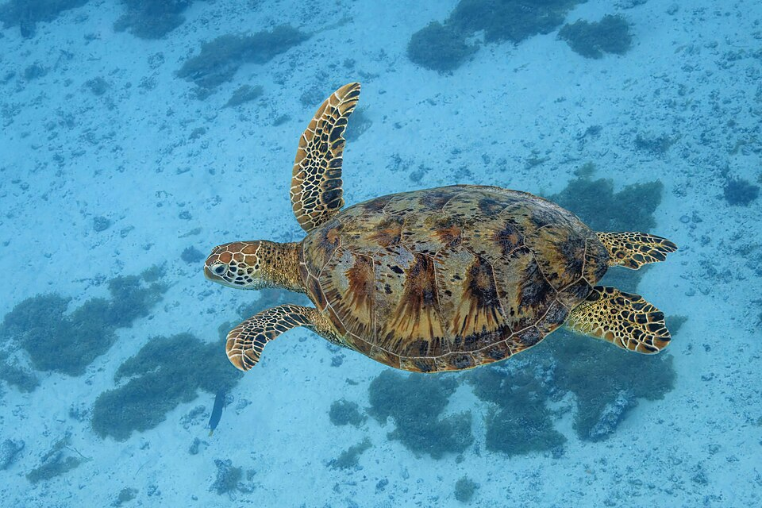
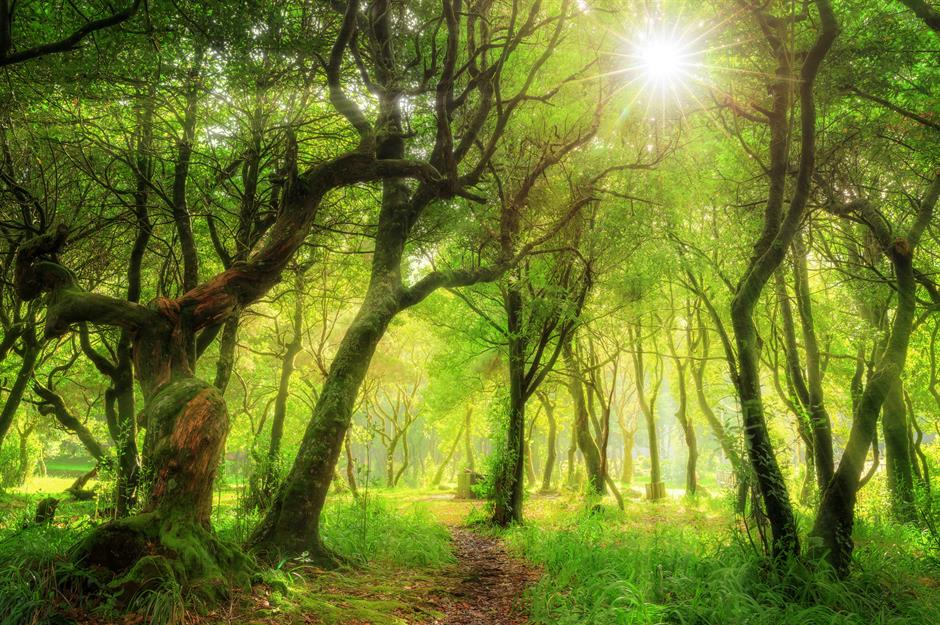
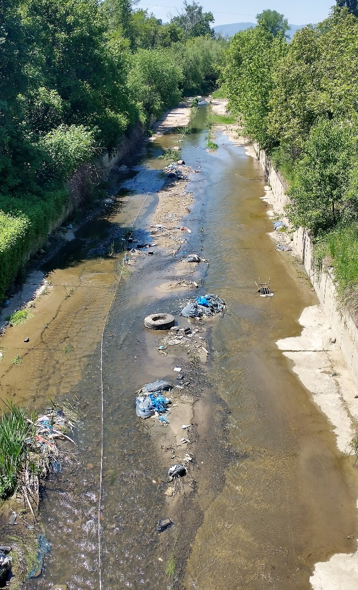

حفاظت از حیاتوحش
حفاظت از لاکپشتهای دریایی
حفاظت از محل تخمگذاری و کاهش زبالههای پلاستیکی میتواند به بقای این جانوران کمک کند.
روزنامهدیواری دیجیتال زیستشناسی
روایتی علمی از حیات، تنوع زیستی و آینده زمین
موضوع ویژه
شناخت جانداران و حفاظت از زیستگاههای طبیعی، بخشی مهم از درک ما از دنیای زنده است.
مطالعه خبرها
هدف این پروژه، بررسی خبرهای روزنامهها و وبگاههای خبری، شناسایی خبرهای مرتبط با زیستشناسی و محاسبه درصد آنهاست. اطلاعات هر خبر باید از منبع معتبر قابل بررسی باشد.
تازههای دنیای زنده

حفاظت از حیاتوحش
حفاظت از محل تخمگذاری و کاهش زبالههای پلاستیکی میتواند به بقای این جانوران کمک کند.

محیطزیست
ورود زبالههای پلاستیکی به محیطهای آبی میتواند برای جانوران و زیستگاهها زیانآور باشد.
پس از تکمیل بررسی ۱۰ خبر، تعداد واقعی هر گروه را در این بخش نمایش میدهیم.
۱۰
۰
۰٪
آمار نهایی باید بر اساس خبرهای واقعی و ثبتشده محاسبه شود.